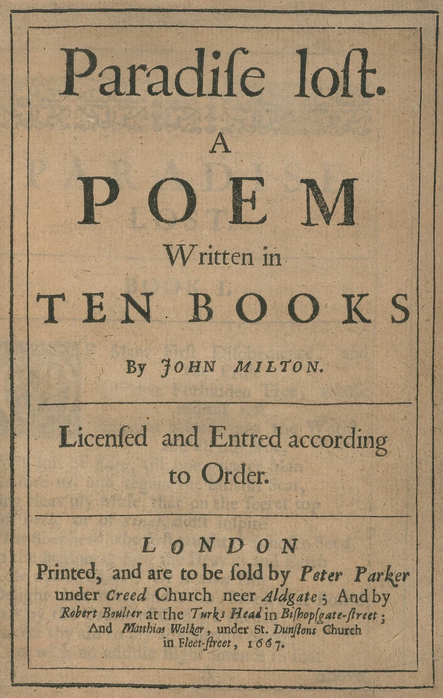

아직 펼치지 않은 카드
아직 펼치지 않은 카드
매일 쓰는 말에 숨은 성경 · 1일상 말 속 성경 이야기아담과 하와가 먹은 열매는 무엇이었을까요? 많은 그림이 사과로 그리지만, 성경에는 뭐라고 적혀 있을까요?아담과 하와가 먹은 건 진짜 사과였을까?
창세기 3장 · 1504년에덴동산 · 독일 뉘른베르크
일상 말 속 성경 이야기
창세기는 하와가 딴 것을 ‘열매’라고만 불러요. 1504년 독일 뉘른베르크의 알브레히트 뒤러는 그 순간을 구리판에 새겼는데, 잎은 무화과를 닮았고 열매는 사과처럼 둥글어요. 판화 속 열매와 나무와 짐승을 하나씩 찾아보세요.
아담과 하와가 먹은 열매, 성경에는 이름이 없대. 옛날 화가가 새긴 그림에서 열매랑 동물들을 찾아볼까?
검수 전 시안이에요(기준서 1판). 장면에는 기록에 있는 것만 옮겼고, 기록마다 다른 것은 그렇다고 밝혔어요. 상상은 ‘눈 감고 상상해 보기’에만 썼어요.
시안 확인용카드 단계 미리 보기
1
랍비들의 자리
창세기는 그 나무를 ‘동산 가운데 있는 선악을 알게 하는 나무’라고 부르고, 거기 달린 것을 ‘열매’라고만 해요(창세기 2장 9·17절, 3장 3·6절). 히브리어 낱말 ‘페리’는 어떤 열매든 가리킬 수 있는 말이에요.
그래서 유대 랍비들은 오래전부터 이 열매를 두고 저마다 다른 답을 냈어요. 그 토론이 탈무드(유대교의 가르침과 토론을 모은 책)와 창세기 풀이책 『창세기 라바』에 남아 있어요.
“하나님은 그 나무가 무엇인지 누구에게도 알려 주지 않으셨고, 앞으로도 알려 주지 않으실 것이다.”
『창세기 라바』 15장 7절, 랍비 여호수아 벤 레위의 이름으로 전하는 말 · 영어 번역(세파리아)을 이 안내서가 옮김
위 그림은 루벤스와 브뤼헐이 1615년 무렵 함께 그린 낙원이에요. 헤이그 마우리츠하위스 미술관은 하와가 건네는 열매를 사과로 설명해요. 아담 뒤에서 사과를 베어 무는 작은 원숭이는 죄를 뜻하는 표시로 읽어요.
아래에서 한 랍비의 자리에 앉아, 그 열매를 무엇이라고 할지 골라 보세요. 고르면 그 랍비가 든 까닭이 나와요.
랍비들이 둘러앉은 자리라면, 그 열매를 무엇이라 할까요?
성경에는 무슨 열매인지 이름이 안 쓰여 있어. 옛날 랍비들은 포도, 밀, 무화과라고 저마다 다르게 생각했대.
물어보기너는 그 열매가 뭐였을 것 같아?
2
뒤러의 동판
1504년, 독일 뉘른베르크의 알브레히트 뒤러는 공책 한 쪽만 한 구리판(약 25×20센티미터)에 아담과 하와를 새겼어요. 동판화는 구리판에 가는 홈을 파고 잉크를 채워 종이에 찍어 내는 그림이에요.
영국 빅토리아 앨버트 박물관은 이 판화를 마치는 데 4년쯤 걸렸다고 해요. 그림 속 열매와 나무, 짐승을 하나씩 눌러 찾아보세요.
그림 속 동그라미를 하나씩 눌러 보세요. ‘가까이 보기’로 크게 볼 수 있어요.

알브레히트 뒤러 「아담과 하와」, 1504년, 동판화, 미국 워싱턴 내셔널 갤러리 · 판화: 알브레히트 뒤러 · 퍼블릭 도메인(CC0) · 미국 내셔널 갤러리 사진 · 위키미디어 공용
그림 위의 숫자나 아래 번호를 눌러 보세요.
일곱 곳을 다 찾았어요. 빅토리아 앨버트 박물관은 이 판화에 사람 몸의 비율을 연구한 뒤러의 공부가 담겼다고 설명해요.
NPR의 2017년 기사는 이 판화 뒤로 유럽의 타락 그림에서 사과가 점점 많아졌다고 써요. 그런데 메트로폴리탄 미술관은 하와가 쥔 가지를 무화과로 읽어요. 한 판화 안에 무화과 잎과 사과처럼 둥근 열매가 함께 있는 셈이에요.
뒤러라는 화가가 구리판에 아주 가는 선으로 새긴 그림이야. 숨은 동물이 많아!
물어보기고양이를 찾았어? 그 옆의 생쥐도 보여?
3
무화과나무 아래
몇 해 뒤, 미켈란젤로는 로마 바티칸의 시스티나 경당 천장에 같은 장면을 그렸어요. 이 그림에서 선악을 알게 하는 나무는 잎이 넓게 갈라진 무화과나무예요.
윗몸이 사람인 뱀이 나무를 감고 하와에게 열매를 건네요. 아담은 그 사이 나뭇가지로 손을 뻗어요.

창세기에서 두 사람은 열매를 먹은 뒤 무화과나무 잎을 엮어 몸을 가렸어요(창세기 3장 7절). 랍비 느헤미야가 무화과를 고른 까닭도 이 구절이었어요.
파이돈 출판사의 해설은, 미켈란젤로의 무화과나무를 ‘나무를 무화과로 그리던 더 오래된 유대 해석’을 따른 것으로 보는 사람도 있다고 소개해요.
미켈란젤로는 그 나무를 무화과나무로 그렸어. 잎이 손바닥처럼 넓지?
물어보기나뭇잎 모양을 손가락으로 따라 그려 볼래?
4
고운 사과
1667년 런던에서 존 밀턴의 긴 시 『실낙원』이 나왔어요. 아담과 하와가 낙원을 잃는 이야기예요. 시의 첫머리는 그것을 ‘금지된 나무의 열매(the Fruit of that Forbidden Tree)’라고 불러요.
그런데 시 속에서 이 열매를 두 번 ‘사과’라고 불러요. 한 번은 뱀 속에 든 사탄이 하와에게 자기가 ‘fair Apples(고운 사과들)’를 맛보았다고 들려주는 말, 또 한 번은 사탄이 타락한 천사들에게 ‘with an Apple(사과 하나로)’ 사람을 꾀었다고 자랑하는 말이에요.

영어 ‘apple’은 원래 딸기류만 빼고 열매를 두루 가리키는 말이었어요. NPR 기사에서 영문학자 로버트 애플바움은, 밀턴 뒤의 독자들이 이 ‘apple’을 오늘의 사과로만 읽게 되었다고 말해요.
이 속표지는 첫판이라 ‘열 권(TEN BOOKS)’이라고 적혀 있어요. 1674년 둘째 판부터 열두 권이 되었어요.
영국 시인 밀턴은 그 열매를 ‘사과’라고 썼어. 그 뒤로 사람들은 그 열매를 사과로 떠올리게 되었대.
물어보기사과가 아니라 무화과였다면, 그림이 어떻게 달라졌을까?
눈 감고 상상해 보기
1504년 뉘른베르크의 작업실을 떠올려 보세요. 창가의 밝은 빛 아래, 공책만 한 구리판 위로 날카로운 조각칼이 지나가요. 사각, 사각. 고양이 털 한 올, 나뭇잎 맥 한 줄이 조금씩 드러나요.
눈을 감아 봐. 아주 작은 칼로 구리판에 선을 하나씩 새기고 있어. 사각사각. 무엇이 나타날까?
나의 자리
내가 자주 쓰는 말 가운데, 뿌리를 알고 나면 다르게 들릴 말은 무엇일까요?
네가 좋아하는 말은 어디서 왔을까?
마음에 닿는 한 줄을 고르거나 직접 써 보세요. 한 줄을 남기면 이 자리의 도장이 찍혀요. 이 기기에만 저장돼요.
더 깊이
궁금한 칸만 펼쳐 읽어도 괜찮아요.
알고 보면
다섯 번 고친 판 영국 박물관에 따르면 이 판화는 판을 고치며 찍어 본 단계(상태)가 다섯 번이에요. 뒤러에게는 드물게 많은 수예요. 밑그림도 여럿 남아 있어, 뒤러가 이 그림을 얼마나 공들여 짰는지 보여 줘요.
네 가지 기질 중세 사람들은 사람의 성격을 넷으로 나누어 보았어요. 빅토리아 국립 미술관은 판화 속 토끼(명랑함)·소(느긋함)·고양이(화를 잘 냄)·엘크(우울함)가 그 넷을 뜻하고, 타락 뒤에 사람을 다스리게 되었다고 여겨졌다고 설명해요.
바위 위의 염소 오른쪽 위 먼 바위에 염소 한 마리가 서 있어요. 빅토리아 국립 미술관은 이 염소를 믿지 않음의 상징으로 읽어요.
마가목 아담이 쥔 마가목은 영어로 ‘마운틴 애시(mountain ash)’라고 해요. 메트로폴리탄 미술관과 빅토리아 앨버트 박물관 모두 이 가지를 생명나무와 이어 읽어요.
기록마다 다른 점
랍비들의 답 탈무드 베라코트 40a에서는 메이르가 포도, 예후다가 밀이라고 해요. 『창세기 라바』 15장 7절에서는 메이르가 밀, 예후다가 포도라고 서로 바뀌어 있어요. 무화과를 말한 사람도 탈무드는 느헤미야, 『창세기 라바』는 요세라고 적어요.
사과가 된 까닭 라틴어 성경은 그 나무를 ‘선과 악(mali)을 아는 나무’라고 옮겼어요. 라틴어 mălum(악)과 mālum(사과)이 비슷해서 생긴 말장난이 사과를 불렀다는 설명이 널리 퍼져 있어요. 그런데 아잔 야딘-이스라엘(2022년)은 그 두 뜻을 다룬 옛 라틴어 기록이 없다고 반박해요. 그는 600점 가까운 그림을 살펴, 사과가 12세기 프랑스 그림에서 처음 자리 잡았고, 열매를 뜻하던 옛 프랑스어 ‘pom’이 ‘사과’로 좁아진 일과 이어진다고 봐요.
뒤러의 나무 메트로폴리탄 미술관은 하와가 쥔 가지를 선악을 알게 하는 나무에서 꺾은 무화과로 설명해요. NPR 기사는 두 사람이 사과나무 곁에 서 있다고 써요.
직접 보기
확인한 날 · 2026년 11월 18일 · 바뀌기 쉬운 정보라 정기적으로 다시 확인해요
뒤러의 「아담과 하와」는 같은 판에서 찍은 여러 장이 세계 여러 미술관에 나뉘어 있어요. 이 카드의 그림은 미국 워싱턴 내셔널 갤러리의 한 장이에요. 미켈란젤로의 그림은 바티칸 시스티나 경당 천장에, 루벤스와 브뤼헐의 그림은 네덜란드 헤이그 마우리츠하위스에 있어요.
전시 여부는 바뀔 수 있으니, 보러 가시기 전에 누리집에서 확인해 주세요.
일곱 곳 다 찾기 금박
뒤러의 판화에서 일곱 곳을 모두 찾아 읽으면 카드에 금박이 입혀져요.
그림 속 일곱 곳을 모두 찾아 읽기
랍비의 자리에서 채색
둘 가운데 하나만 해도 카드가 채색돼요.
랍비들의 자리에서 그 열매를 하나 골라 보기
아이와 함께 ‘영화처럼 보기’를 끝까지 보기
근거 보기 (23)
- 대한성서공회 개역개정: 창세기 2장 — 동산 가운데 생명나무와 선악을 알게 하는 나무(9절), 그 열매를 먹지 말라(16~17절)
- 대한성서공회 개역개정: 창세기 3장 — 동산 중앙 나무의 열매(3절), 먹음직·보암직(6절), 무화과나무 잎(7절)
- 세파리아: 탈무드 베라코트 40a — 메이르는 포도(노아의 포도주), 느헤미야는 무화과(무화과 잎), 예후다는 밀(곡식 맛과 아빠·엄마)
- 세파리아: 『창세기 라바』 15장 7절 — 메이르는 밀, 예후다는 포도, 아코의 아바는 시트론(나무와 열매의 맛이 같음), 요세는 무화과, 여호수아 벤 레위: 그 나무를 알려 주지 않으심
- 마우리츠하위스: The Garden of Eden with the Fall of Man — 1615년 무렵, 루벤스가 아담·하와·나무·말·뱀, 브뤼헐이 풀과 짐승, 하와가 건네는 사과, 사과를 무는 원숭이(죄의 표시)
- NPR 기사(니나 마티리스, 2017, KPBS에 실림): 히브리어 페리는 어떤 열매든, 랍비들의 여러 답, 라틴어 말장난 설(애플바움), 미켈란젤로의 무화과나무, 뒤러 판화 뒤 사과가 많아짐, 밀턴이 두 번 사과라 부름, 밀턴 뒤의 독자들
- 메트로폴리탄 미술관 19.73.1: 뒤러 Adam and Eve — 1504년, 25.1×20cm, 아담의 마가목은 생명나무, 하와가 꺾은 무화과 가지는 선악을 알게 하는 나무, 고양이·토끼·소·엘크와 네 기질, 사람 몸의 비율
- 미국 내셔널 갤러리 1943.3.3492: 이 카드의 판화 — 가지 위 앵무새, 이름표 글(ALBERT / DVRER / NORICVS / FACIEBAT 1504), 고양이·엘크·소·생쥐·토끼, 오른쪽 위 바위의 염소
- 빅토리아 앨버트 박물관: Adam and Eve — 4년쯤 걸림, 마가목은 생명나무, 앵무새와 이름표, 산양, 생쥐와 고양이, 이름표의 번역(뉘른베르크의 알브레히트 뒤러가 만들었다 1504), 사람 몸 비율 연구
- 영국 박물관 1868,0822.167: 선악을 알게 하는 나무 양쪽의 두 사람, 짐승들, 다섯 번의 상태와 많은 밑그림, 가장 길고 눈에 띄는 이름 글
- 호주 빅토리아 국립 미술관: 고양이와 쥐(쫓겨난 뒤의 다툼), 앵무새(지혜·너그러움·동정녀 탄생), 네 기질과 짐승, 염소(믿지 않음)
- 바티칸 박물관: 원죄와 낙원에서 쫓겨남 — 선악의 나무를 감은 뱀이 하와에게 열매를 건넴
- 아틀라스 옵스큐라: 미켈란젤로의 무화과 — 시스티나 천장의 나무에는 무화과가 열림
- 파이돈(The Art Museum 해설): 미켈란젤로의 「유혹」 속 나무는 무화과, 더 오래된 유대 해석을 따른 것으로 보는 이도 있음
- 다트머스 대학 밀턴 읽기 방: 『실낙원』 9권 585행 ‘those fair Apples’(사탄이 하와에게)
- 다트머스 대학 밀턴 읽기 방: 『실낙원』 10권 487행 ‘with an Apple’(사탄이 타락한 천사들에게)
- 브리태니커: Paradise Lost — 1667년 10권, 1674년 둘째 판 12권, 아담과 하와의 타락 이야기
- 워드히스토리스(2016): forbidden fruit — 불가타 창세기 2장 17절 ‘scientiae boni et mali’, 사과는 고전 이후 라틴 전통, 탈무드의 포도·무화과·밀, 라틴어 mālum·mălum 말장난 가능성, 영어 apple은 원래 열매를 두루 가리킴
- 「Temptation Transformed」 서평(에이미 발로그): 야딘-이스라엘(시카고 대학 출판부 2022) — malum 말장난 설에 근거가 없음, 12세기 프랑스 그림, 600점 가까운 그림, 라틴어 pomum·옛 프랑스어 pom이 사과로 좁아짐
- 위키미디어 공용: 루벤스·브뤼헐 「낙원과 사람의 타락」 사진 정보
- 위키미디어 공용: 뒤러 「아담과 하와」(미국 내셔널 갤러리, CC0) 사진 정보
- 위키미디어 공용: 미켈란젤로 「원죄와 낙원에서 쫓겨남」 사진 정보(1509~1510년 무렵)
- 위키미디어 공용: 『실낙원』 1667년 속표지(하버드 호턴 도서관) 사진 정보
그림·사진·소리 출처
‘처음 만나는 기독교 문화’의 깊은 카드예요. 실제 인물의 사진은 쓰지 않았어요. 카드 단계와 남긴 글은 이 기기에만 저장돼요.